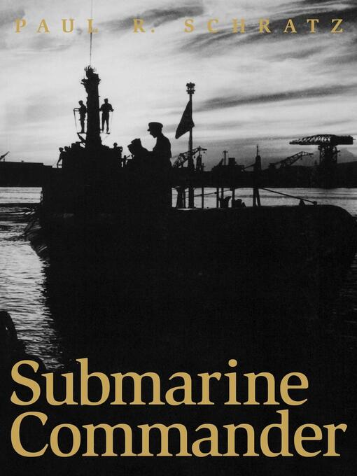
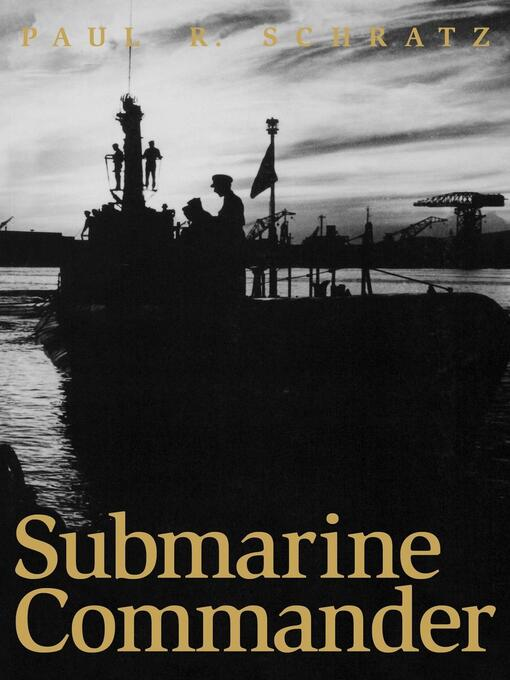
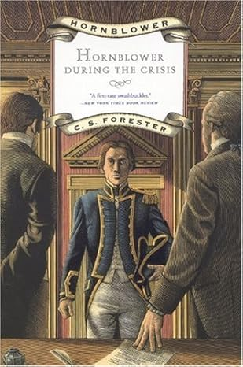
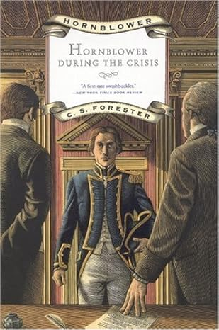
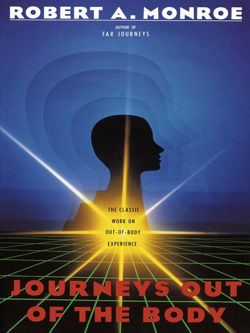
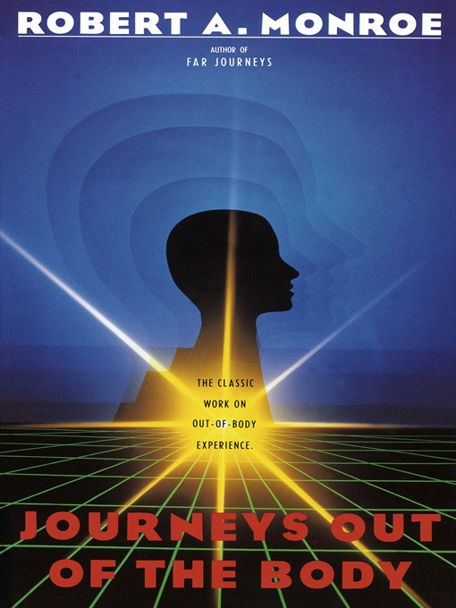

Library - MelonMars
These are books that I have read this year to date. They aren't necessarily books that I liked, but I liked most of them. Hover over to see their name if it is unclear, and also a rating


 

 



 



I am currently reading